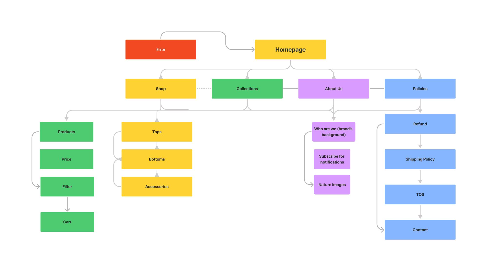
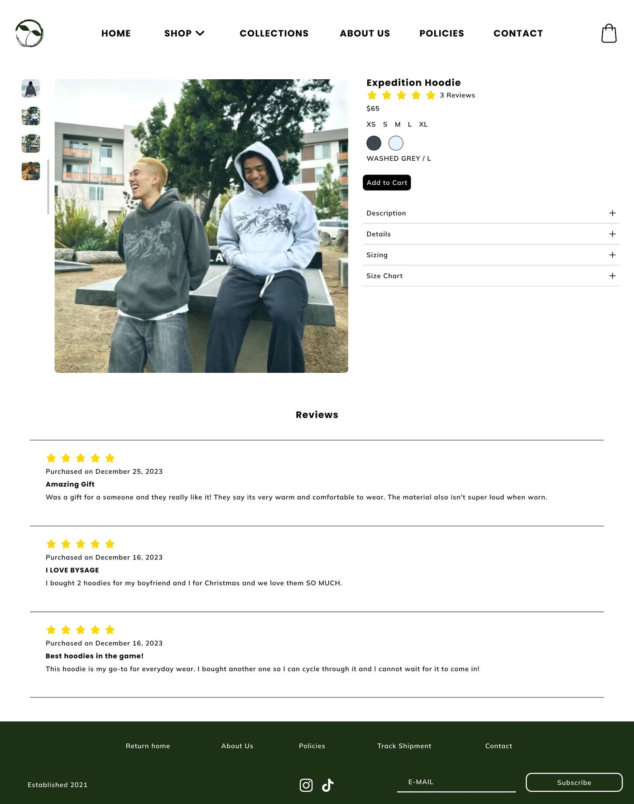
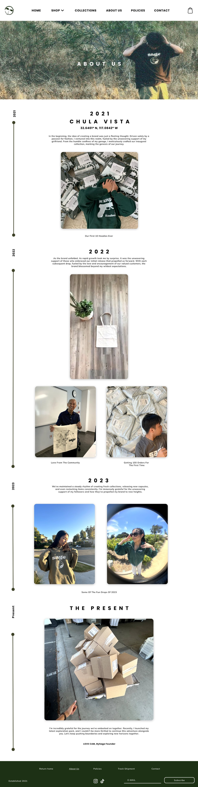

Overview
How can we redesign BySage's website to authentically represent its values and aesthetic?
BySage is a San Diego-based clothing brand built around limited drops and a loyal local following. When we started, the entire brand presence lived solely on Instagram, and the website only opened during launches — so first-time visitors had no way to browse the brand, read its story, or build any connection outside of drop windows.
Our team of four was brought on for a full website redesign. As lead, I owned:
- The reconstruction of site navigation, visual direction, and design across the product, collections, and home pages — focused on product transparency and brand storytelling.
- Leading our team through user interviews, design sprints, and usability testing.
- Proactively ideating with the PM and brand stakeholder — setting sprint goals for the product roadmap and implementing a plan for a viable MVP.
User Research
Listening before designing
We interviewed 23 individuals — from frequent repeat loyalists to potential customers who'd never bought from BySage. We needed that range of perspectives, and it surfaced three main issues:
Trust in Small Businesses
"How do I know this brand is legit? With a small label I can't always tell if the quality is there before I buy."
Unclear Product Information
"When a site buries the details, I give up. I don't have time to dig around for fit, materials, or policies between meetings."
Choice Overload on Mobile
"There's so much to scroll through and no guidance. I just want to find the standout piece without endless swiping."
Synthesizing the interviews, I grouped users into three personas defined by shopping frequency rather than demographics:
Luna
Wants versatile, year-round pieces that fit her budget and values. Frustrated by the lack of pieces tailored to a changing climate.
Trevor
Discovered BySage once and hasn't returned. Needs durable, versatile clothing and a reason to re-engage outside of a drop.
Alex
Found BySage on social media but has never purchased. Needs the brand's story and a trustworthy, intuitive shopping experience before buying.
That gap between strong brand loyalty and a weak web presence was the core problem — people loved BySage but had nowhere to engage with it between launches.
"Honestly the website is pretty plain compared to the Instagram. You also can't see when the page is locked for new drops, which makes me forget about it sometimes."
— Interview participant, SDSU undergradFeature Areas
Three features I spearheaded for the MVP
Based on the research findings, I helped define three feature areas that became the backbone of the MVP:
Customer Testimonials
Display customer reviews to ease [finish: e.g. first-time-buyer hesitation and build trust in the brand].
Transparent Product Details
Offer customers detailed size charts, material blends, and return/shipping policies.
Smooth Responsive Design [title tbd]
Smooth responsive design for easy browsing.
Information Architecture
Site architecture before pixels
Proper site architecture can turn endless scrolling into actionable clicks that lead to increase in sales. Our new structure gave every page a clear place so visitors could browse the brand's identity outside of active drops.

Final Design
A mobile-first shopping experience
The product page was rebuilt so customers can see everything that matters before buying — materials, fit, sizing, and reviews — directly addressing the trust gap that surfaced in research.


Mobile product page with reviews — built to earn first-time-buyer trust where most customers shop.
BySage's audience skews young — high school and college students who browse and buy from their phones. Responsive design wasn't optional. We designed mobile-first, then scaled up to desktop, making sure the shopping experience held together across both.

The Collections and About pages turned the brand's history into something visitors could explore year-round. The About page lays out BySage's story as a timeline — from its first ten hoodies in Chula Vista to its present-day drops.

Testing & Iteration
Task-based testing sharpened the build
We ran task-based usability testing with 10 participants, asking them to complete the following while thinking aloud:
- Shop for a hoodie
- Add it to the cart
- Find contact info
- Track an order
Two structural issues surfaced, and we resolved both:
Inconsistent Type Sizing
Users found text either too large or too small, with weak signifiers for interactive elements. We rebuilt the type scale across mobile and desktop and added clearer call-to-action indicators on every page.
Overwhelming Content Density
Media and text felt unbalanced and scaled too large, crowding the page. We rescaled content, split long copy into shorter paragraphs, and revisited the Collections and About pages with the client to keep only the most essential messaging.
Results
Where did we end up?
Giving BySage a persistent home drove engagement even outside of launch windows. After the redesign direction launched, the brand saw a 200% increase in Instagram followers, sold out its Spring 2024 collection within three minutes, and saw a 20%+ lift in traffic during drops.
Beyond the metrics, the founder could finally point people to a real website that represented his brand — not just an Instagram page that went dark between drops.
"Donovan immediately grasped and embraced our brand's vision, understanding the unique challenges of establishing trust and credibility for an emerging fashion brand. His redesign of the website not only improved navigation and usability but also significantly enhanced customer trust and engagement. His contributions have left a lasting impact on our brand's growth and reputation."
— Cameron Pitel, Founder of BySageReflection
What I took away
Designing within real constraints
One of the most valuable skills I built was developing a product under a real business's constraints. As designers we often shoot for the stars, but this project grounded me — the goal was a site that was accessible, feasible, and genuinely buildable for our client, not just impressive in a portfolio.
If I had more time, I'd push harder on the shopping flow itself. We focused our energy on the homepage, navigation, and brand identity; the product detail, cart, and checkout could have used another round of testing. That's where I'd go next.